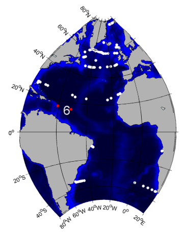
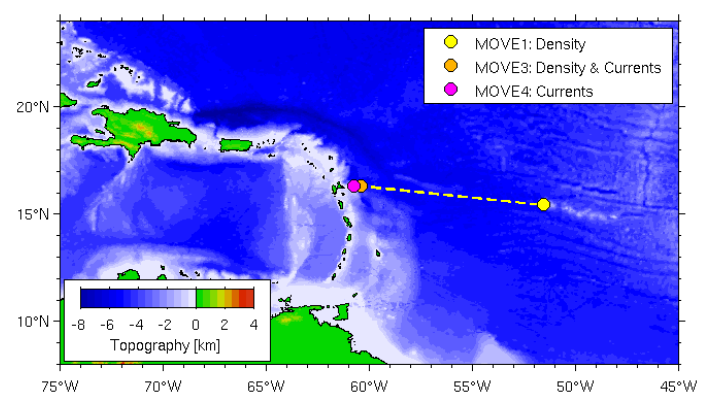
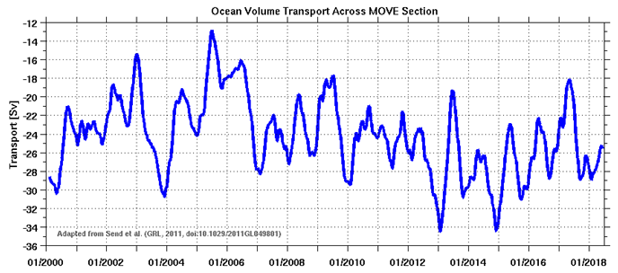

| |||||||||||||
|
2. GSR Greenland Scotland Ridge 3. OSNAP Overturning in the Subpolar North Atlantic Program 4. NOAC North Atlantic Changes 6. MOVE Meridional Overturning Variability Experiment 8. SAMBA-SAMOC South Atlantic Meridional Overturning Circulation
|
MOVEMeridional Overturning Variability Experiment 
Scientific rationale for the TMA:In the year 2000, the German CLIVAR program initiated the monitoring array MOVE in the tropical West Atlantic, in order to monitor the transport fluctuations in the NADW layer. With the investigator's relocation to Scripps Institution of Oceanography, MOVE has been transferred to become a US-operated project. The location was chosen because the basin geometry is particularly well-suited for monitoring the deep branch of the Atlantic Meridional Overturning Circulation with a small number of mooring installations. In the current configuration, two "geostrophic end-point moorings" (MOVE1, MOVE3) plus one traditional current meter mooring on the slope (MOVE4) are used to cover the section between the Lesser Antilles (Guadeloupe) and the Mid-Atlantic Ridge. The goal is to determine the transport fluctuations across this section, using dynamic height and bottom pressure differences between the moorings for estimates of the geostrophic transport. The core system of moorings has occasionally been augmented with additional measurements, including acoustic thermometry, RAFOS floats, and more bottom pressure sensors for comparison with GRACE satellite data. In some years, additional sites called MOVE2, MOVE5, MOVE6, and MOVE7 were occupied, but have since been discontinued. For more details of the array see:http://mooring.ucsd.edu/index.html?/projects/move/move_intro.html.

Figure 1: Map showing the MOVE array configuration. Adapted from Send et al. (2011), their figure 1. Data products: volume transport time seriesFig. 2: Time series of volume transport in the NADW layer (1200–4950 m) at the MOVE array (negative values denote southward flow). It is computed as the sum of the directly measured western continental slope (wedge) current and the geostrophically derived internal component of the NADW layer over the 1000 km long section, relative to 4950 m. The data were low‐pass filtered over 120 days. Adapted from Send et al. (2011), their figure 2. Transport data in NetCDF can be downloaded hereUwe Send, Matthias Lankhorst, Torsten Kanzow: Observation of decadal change in the Atlantic Meridional Overturning Circulation using 10 years of continuous transport data. Geophysical Research Letters, Vol. 38, L24606, 2011. doi:10.1029/2011GL049801.
The array instrument data are available at
ftp://ftp.ifremer.fr/ifremer/oceansites/DATA/
and ftp://data.ndbc.noaa.gov/data/oceansites/DATA/
PublicationsTorsten Kanzow, Uwe Send, Walter Zenk, Alan D. Chave, Monika Rhein: Monitoring the integrated deep meridional flow in the tropical North Atlantic: Long-term performance of a geostrophic array. Deep Sea Research Part I: Oceanographic Research Papers, Volume 53, Issue 3, March 2006, Pages 528-546. doi:10.1016/j.dsr.2005.12.007. Uwe Send, Matthias Lankhorst, Torsten Kanzow: Observation of decadal change in the Atlantic Meridional Overturning Circulation using 10 years of continuous transport data. Geophysical Research Letters, Vol. 38, L24606, 2011. doi:10.1029/2011GL049801.
For further publications, see: | ||||||||||||